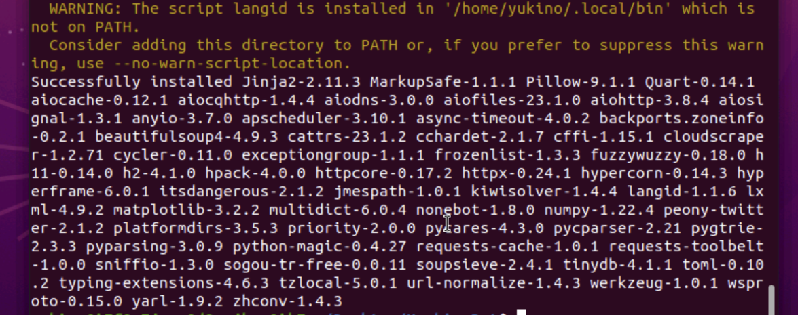

云服务器使用及QQ机器人搭建
1. 服务器选择
三个主流的：阿里云、腾讯云、华为云。萌新的我需要三选一
华为云没用过。阿里云学生认证可以白嫖，腾讯云学生认证是打折，看着蛮便宜，但是这个时间买是1.9折，去年11月是1.1折。
服务器使用阿里云，因为可以白嫖7个月，新手上路还是找免费的试一下比较好，随便造，造坏了也不心疼。
cpu、内存这些东西就是看钱的啦，根据需要购买合适的就行。
系统这个东西，不太清楚是怎么选择的。本人选择Ubuntu的依据是：尽管windows很熟悉，但是几个资深程序员的哥们儿用的都是Linux内核系统；此外，Liunx相对于windows的内存占用要小太多了，服务器还是要抠抠搜搜一点。
Linux提供服务好像也蛮方便的
2. 服务器操作
跟着阿里的教程走下来，基本上就会怎么操纵服务器了。远程连接服务器有两种方式：Workbench和VNC，前者似乎只能用命令行输入，后者则可以安装GUI。
实际上，不同云服务商对于自己云服务器的名称和操纵方式是有所不同的。
3. 图形界面的安装
我的一个朋友对我说，只有当你能够用命令行完成你想要的所有操作后，你才算是真正懂计算机，我觉得很有道理。目前还没有这个能力，先用带GUI的VNC试一下，后续需要理解Workbench的命令行是什么东西，如何操作。其实目前在没有GUI的情况下无法理解系统内部结构。
GUI安装流程的方法，阿里云本身有提供，最终选择的系统是Ubuntun20.04。
一开始选择的18.04的造了半天python安装还是出问题。因为机器人需求3.8的python，18.04默认是3.6，升级过程中会出现很多问题。
4. PCR会战机器人的选择
之前主流是yobot，但是会战改版后用不了了，开发者不更新了。
HoshinoBot是我一开始配置的，结果用不了会战功能，但是其他花里胡哨的似乎挺全。配置方法按照这个Liunx的安装流程走就是了。
实际上好像在哪里都无所谓？但是部署在这个位置的时候，运行.bat的时候，命令行显示的是：
顶级难蚌：18.04在numpy上安装疯狂失败，20.04一路绿灯😅

我这个服务器的带宽低，不用清华镜像的时候很慢。应该加上镜像设置的命令😇
1 | `python3.8 -m pip install -i https://pypi.tuna.tsinghua.edu.cn/simple -r requirements.txt` |
yobot_remix是yobot针对新版公会战的魔改，实测公会战能用。由于是基于yobot改的，命令和部署方法大体也和yobot相同
5. 机器人没响应
典中典，被风控了，可以自行搜索解决方法。
这个里面的高赞回答很有用